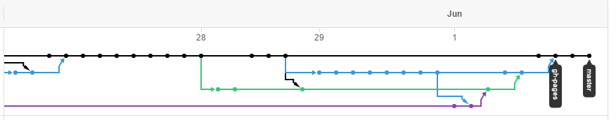

Vue.js 通过尽可能简单的 API 实现响应的数据绑定和组合的视图组件。
优点
缺点：
比如，在使用了如下的Vue对象后:
var header_links_inline_display = new Vue({
el: "#header .leftArea",
data: {
header_links_inline:
[
{href: "#", title: "小米网"},
{href: "#", title: "MIUI"},
{href: "#", title: "米聊"},
{href: "#", title: "游戏"},
{href: "#", title: "多看阅读"},
{href: "#", title: "云服务"},
{href: "#", title: "小米网移动版"},
{href: "#", title: "问题反馈"},
{href: "#", title: "Select Region"},
]
}
});
我们可以只写一个形如下面的一个html模板:
<ul class="leftArea">
<li>
<a href="{{header_links_inline[0].href}}">{{header_links_inline[0].title}}</a>
</li>
<div v-for="item in header_links_inline.slice(1)">
<li><span class="sep">|</span></li>
<li><a href="{{item.href}}">{{item.title}}</a>
</div>
</ul>
浏览时它会将模板展开为如下html代码
<ul class="leftArea">
<li><a href="#">小米网</a></li>
<div>
<li><span class="sep">|</span></li>
<li><a href="#">MIUI</a></li>
</div><div>
<li><span class="sep">|</span></li>
<li><a href="#">米聊</a></li>
</div><div>
<li><span class="sep">|</span></li>
<li><a href="#">游戏</a></li>
</div><div>
<li><span class="sep">|</span></li>
<li><a href="#">多看阅读</a></li>
</div><div>
<li><span class="sep">|</span></li>
<li><a href="#">云服务</a></li>
</div><div>
<li><span class="sep">|</span></li>
<li><a href="#">小米网移动版</a></li>
</div><div>
<li><span class="sep">|</span></li>
<li><a href="#">问题反馈</a></li>
</div><div>
<li><span class="sep">|</span></li>
<li><a href="#">Select Region</a></li>
</div>
</ul>
在使用了Vue.js库之后，首页上绝大部分的重复冗余的代码都不复存在，只留下最基本的框架，整个html的代码也缩减到了600行。
如果不使用，并且使用标准缩进，整个页面的代码行数需要2k行+并且层级复杂，且由于数据分散，会导致修改非常麻烦。
由于这里写的是完全静态的页面，所以并没有触及到Vue.js的高级的特性，但却足以感受到Vue.js的强大。
var index;
//首页大图切换
$(".category_move span").click(function() {
$(".category_move span").removeClass("cur_move");
$(this).addClass("cur_move");
if (index !== $(this).parent().index()) {
index = $(this).parent().index();
$(".category_hot_list > li").stop().fadeOut('500');
$(".category_hot_list > li:eq(" + index + ")").stop().fadeIn('500');
}
});
css部分
使用了Web Essentials对css进行了补全，尽可能地保证对各个浏览器的支持
.block-item-m .author {
display: block;
color: #ffffff;
color: rgba(255,255,255,0.6);
}
.box-shadow {
-webkit-transition: all 0.35s;
-moz-transition: all 0.35s;
-ms-transition: all 0.35s;
-o-transition: all 0.35s;
transition: all 0.35s;
position: relative;
z-index: 1;
}
通过对比我们可以发现，我们的作品至少达到了与官网90%的相似度
<div class="tags">
{{? value.tag[1] !== '' }}
<div class="tag tag-saleoff">{{=value.tag[1]}}</div>
{{?? (value.tag[3] !== '0') && (value.tag[3] !== '') }}
<div class="tag tag-shipping">Free Shipping</div>
{{?? value.tag[4] === true }}
<div class="tag tag-gift">Free Gift</div>
{{?? value.tag[2] === true }}
<div class="tag tag-new">New</div>
{{?}}
</div>
<div class="tags">
<div class="flag flag-new" v-if="item.label=='new'">新品</div>
<div class="flag flag-saleoff" v-if="item.label=='saleoff'">{{item.sale}}</div>
<div class="flag flag-postfree" v-if="item.label=='postfree'">{{item.post}}</div>
</div>
可以发现，其形式是颇为相似的
git的使用

并且我们充分利用了git带来的便利，进行协同作业